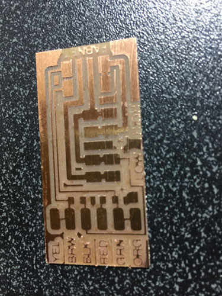

With week 11 comes the continued work on the MTM project with Kayla. At this point we have been busy working on getting our cables made, our boards milled and stuffed and connecting to the plotter. Kayla has taken the lead on working with Python and I am assisting her with getting the Gestalt Nodes programmed. I am doing research on how to get our images to the machine and have explored both the mods and GRBL. We have also been in touch with Jonathan at Incite Focus as we are having issues with the programming correctly loading on to the nodes. We seem to be stuck as the load results in the Gestalt boards running in BOOTLOADER mode. We have reached out to Nadyia and are hoping for some help on where to look next. Assignment for the week - Automate your machine, document your group project and your individual contribution. We looked around and we have determined that we need to make sure that we need our machine to do two things: Sense and actuate. We also need to work on getting our Gestalt boards to communicate with each other. photo plotters. Our plan was to start programming our machines. Kayla determined that we would need to make three fabnet boards so we started on that first.
Next Kayla and I started to work on connecting the Fabnet boards to the Gestalt boards using the 10 cable connector cables that we made. Once this was done it was time to plug in and and power up.
At this point in time Kayla and I have hit a wall. We have been working with Jonathon at Incite Focus over the last few months we have come to the conclusion that there may be a hardware issue with our Gestalt Nodes. Both Blair and Jonathon have suggested that we look to a different solution for running the machine. We are going to be ordering some Arduino and a GRBL shield. We are working on ordering those parts to get the machine running.
This is StoneWork, a free, fully standards-compliant CSS template designed by TEMPLATED. The photos in this template are from Fotogrph. This free template is released under the Creative Commons Attribution license, so you're pretty much free to do whatever you want with it (even use it commercially) provided you give us credit for it. Have fun :)